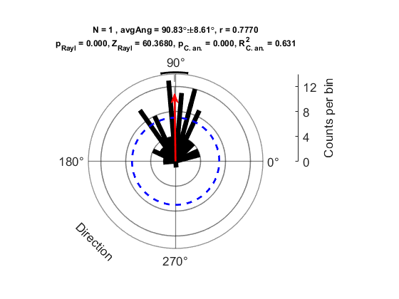
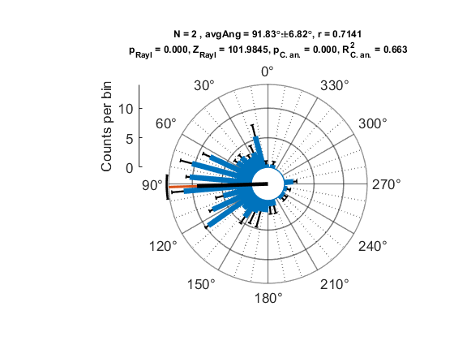
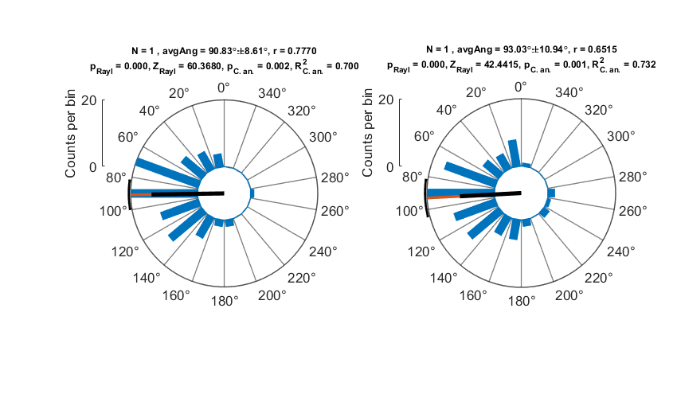
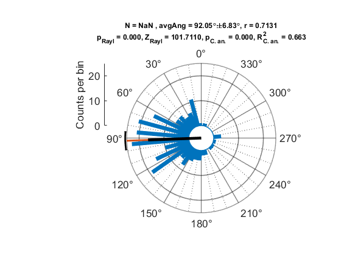
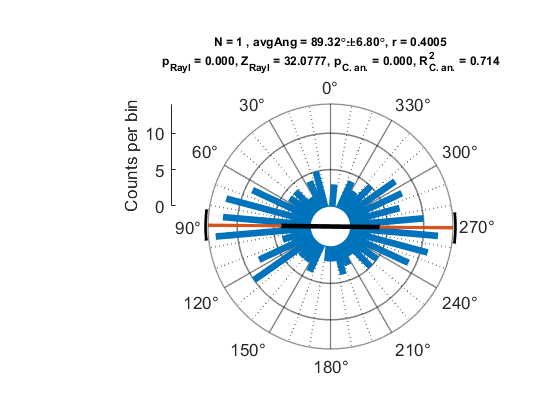
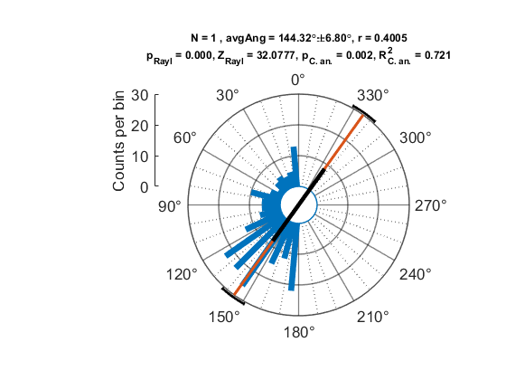
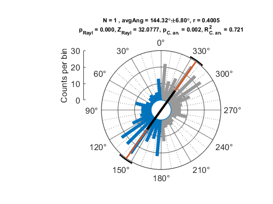

Using the CircHist Class
Contents
Plot Distribution Data
Generate a noisy sample (von Mises distribution with theta == 90 deg).
rng default sDist = mod(rad2deg(circ_vmrnd(pi/2, 2, 100)), 360); % generate sample, convert to deg nBins = 36; % number of bins, makes bin size of 10 deg
Plot the circular histogram:
obj1 = CircHist(sDist, nBins);
Adjust appearance:
obj1.colorBar = 'k'; % change color of bars obj1.avgAngH.LineStyle = '--'; % make average-angle line dashed obj1.avgAngH.LineWidth = 1; % make average-angle line thinner obj1.colorAvgAng = [.5 .5 .5]; % change average-angle line color % remove offset between bars and plot-center rl = rlim; % get current limits obj1.setRLim([0, rl(2)]); % set lower limit to 0 % draw circle at r == 0.5 (where r == 1 would be the outer plot edge) rl = rlim; obj1.drawCirc((rl(2) - rl(1)) /2, '--b', 'LineWidth', 2) obj1.scaleBarSide = 'right'; % draw rho-axis on the right side of the plot obj1.polarAxs.ThetaZeroLocation = 'right'; % rotate the plot to have 0° on the right side obj1.setThetaLabel('Direction', 'bottomleft'); % add label % draw resultant vector r as arrow delete(obj1.rH) obj1.drawArrow(obj1.avgAng, obj1.r * range(rl), 'HeadWidth', 10, 'LineWidth', 2, 'Color', 'r') % Change theta- and rho-axis ticks obj1.polarAxs.ThetaAxis.MinorTickValues = []; % remove dotted tick-lines thetaticks(0:90:360); % change major ticks rticks(0:4:20); % change rho-axis tick-steps obj1.drawScale; % update scale bar
Plot Multi-Sample Distribution
Generate another noisy sample with a different distribution-width kappa.
rng default s2Dist = mod(rad2deg(circ_vmrnd(pi/2, 1.5, 100)), 360); sMultiDist = {sDist, s2Dist}; % pack both samples into a cell-array figure CircHist(sMultiDist, nBins);
Combine Multiple Histograms in One Figure
Create subplot, note that the created subplot axes must be polaraxes.
nBins2 = 18; % Use different number of bins, resulting in 20 deg bins fH = figure; subAx1 = subplot(1, 2, 1, polaraxes); subAx2 = subplot(1, 2, 2, polaraxes); obj2 = CircHist(sDist, nBins2, 'parent', subAx1); obj3 = CircHist(s2Dist, nBins2, 'parent', subAx2); thetaticks(obj2.polarAxs, 0:20:360); obj2.polarAxs.ThetaAxis.MinorTickValues = []; thetaticks(obj3.polarAxs, 0:20:360); obj3.polarAxs.ThetaAxis.MinorTickValues = []; % Make rho-axes equal for both diagrams maxRho = max([max(rlim(subAx1)), max(rlim(subAx2))]); newLimits = [min(rlim(subAx1)), maxRho]; obj2.setRLim(newLimits); obj3.setRLim(newLimits); % Adjust figure-window size drawnow fH.Position([3,4]) = [850,500]; % Figure dimensions
Alternatively, use the 'baseLineOffset' property to unify plot appearance:
baseLineOffset = 40; % Set the baseline offset to have 40 % of the rho-axis range upperLim = 20; % New upper rho-axis limit obj2.setRLim(upperLim, baseLineOffset); obj3.setRLim(upperLim, baseLineOffset); obj2.polarAxs.RAxis.TickValues = [0, upperLim]; % Adjust axis ticks obj3.polarAxs.RAxis.TickValues = [0, upperLim]; obj2.drawScale; % Refresh rho-axis scale bar so it has the same axis ticks obj3.drawScale;
Plot Already-Binned Data
Bin the generated multi-sample distribution before plotting.
Note that edges can be omitted in the CircHist call because the number of bins is implicitly defined by the number of data points in histData, but that 'dataType' must be specified as 'histogram'.
edges = 0:10:360; histData = histcounts(mod([sDist; s2Dist], 360), edges); figure CircHist(histData, 'dataType', 'histogram');
Axial Data
Copy the von Mises data with an offset of 180 deg and a little bit of noise to generate an axial, bimodal distribution.
rng default
noise = (rand(size(sDist)) - 0.5) * 10;
sAxial = [sDist; sDist + 180 + noise];
Call CircHist with 'areAxialData' specified as true.
figure
CircHist(sAxial, nBins, 'areAxialData', true);
 Note that now the average angle is indicated by an axis that halves the diagram at this angle.
Draw Arrows
figure rng default arrowLen = randn(numel(sDist), 1); % random arrow lengths arrowLen = arrowLen / max(arrowLen); arrowLen = arrowLen + abs(min(arrowLen)); obj4 = CircHist([1, 2], 36, 'baseLineOffset', 0); % dummy data delete([obj4.avgAngH; obj4.avgAngCiH(:); obj4.barH(:); obj4.rH]); % remove dummy data to get an empty plot title(''); obj4.scaleBar.Label.String = 'Vector length'; obj4.polarAxs.ThetaAxis.MinorTickValues = []; thetaticks(0:90:360); arrowH = obj4.drawArrow(sDist, arrowLen); obj4.drawScale; % update scale
Change visual properties and add another arrow.
set(arrowH, 'HeadStyle', 'plain', 'HeadWidth', 3) % Draw a single arrow that ends at the outer plot edge avgAng = circ_mean(deg2rad(sDist), arrowLen); % average angle, weighted by arrow length obj4.drawArrow(rad2deg(avgAng), [], 'Color', 'r', 'LineWidth', 3) % by specifying the second argument as empty, the arrow automatically ends at the plot edge
drawnow % (Necessary for publishing this script, for whatever reason)
Enable Tab Auto-Completion for Object Construction
If functionSignatures.json is located in the same directory as the @CircHist folder, Name-Value pairs of the object-constructor call can be auto-completed as it is the case for builtin MATLAB functions. See also: https://mathworks.com/help/matlab/matlab_prog/customize-code-suggestions-and-completions.html